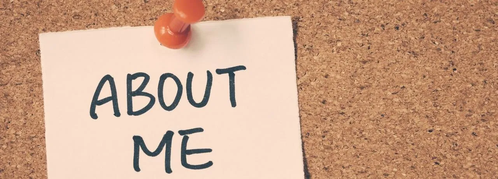

Bitácora
En esta sección registraré el progreso de mis clases en las semanas del primer promedio.
SEMANA 1

En la primera semana de nuestro curso de Laboratorio de Innovación 2, comenzamos explorando un resumen detallado de los temas que abordaremos a lo largo del promedio. Además de esta introducción, nos adentramos en la práctica descargando Visual Studio Code y configurando nuestras cuentas en GitHub, herramientas esenciales para nuestro trabajo futuro en desarrollo de software.
Sin embargo, no nos limitamos solo a eso; también dedicamos tiempo a definir una problemática grupal, sentando así las bases para un proyecto adicional que abordaremos en paralelo a nuestros estudios de programación. Esta primera semana marcó un inicio prometedor, combinando la adquisición de habilidades técnicas con la exploración de la innovación y la resolución de problemas en equipo. Estoy emocionado por el potencial creativo que esta clase promete desbloquear.
SEMANA 2

Durante la segunda semana del curso, nos sumergimos en el uso práctico de las aplicaciones que habíamos descargado la semana anterior. Para mi sorpresa, descubrí que estas aplicaciones tenían la capacidad de conectarse entre sí, abriendo un mundo de posibilidades creativas.
Aunque al principio temía que la programación fuera complicada, a medida que avanzaba la semana, mi interés crecía gradualmente. La claridad de las explicaciones del profesor me ayudó a comprender mejor los conceptos. Además, comenzamos a trabajar con los grupos que definimos anteriormente, logrando definir con mayor precisión la problemática que abordaremos en nuestro proyecto. Esta semana consolidó mi confianza en mis habilidades y mi entusiasmo por el curso.
SEMANA 3

Durante la tercera semana de clases, el profesor nos proporcionó una plantilla de página web que debíamos personalizar según nuestras preferencias y colocando nuestros datos personales. Realizamos nuestros primeros cambios, aplicando lo aprendido en programación en Visual Studio Code. Además, aprendimos a vincular nuestra página de GitHub con esta aplicación, lo que nos permitirá realizar modificaciones y seguir trabajando en nuestro proyecto en las semanas siguientes. Este paso nos acercó aún más al mundo del desarrollo web y nos preparó para desafíos más avanzados en el futuro del curso.
SEMANA 4

Durante la cuarta semana de clases, nos dedicamos principalmente al trabajo en equipo, avanzando significativamente en la mayoría de los aspectos necesarios para tener todo listo para la semana 5. Además, progresamos en la creación de las pestañas "Sobre mí" y "Contacto" en nuestra página web, donde incluimos información personal y algunas imágenes relevantes. Estos avances nos acercaron más a completar nuestro proyecto y nos permitieron personalizar nuestra página web de manera más significativa.
SEMANA 5

Durante la quinta semana, concluimos exitosamente nuestro trabajo en equipo al presentar el proyecto completo en clase. Además, avanzamos significativamente en la mayoría de los puntos y secciones de la página web, teniendo en cuenta los fundamentos de la programación.
Este progreso nos permitió consolidar nuestra comprensión y habilidades, acercándonos cada vez más a nuestro objetivo final.
Con el proyecto en marcha y la página web tomando forma, estamos preparados para enfrentar los desafíos que nos esperan en las próximas etapas del curso.